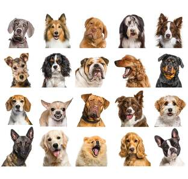

ONG
Ayuda a un peludo
En los ultimos tiempos la tasa de animales callejeros a subido exponencialmente por
varias causales, por ese motivo la esta ong ayuda para que obtenga una familia quien quiera
adoptarlo y que tenga una vida feliz junto a ellos, consta tanto con la posible adopción
tanto como a gatos como a perros a su preferencia.
